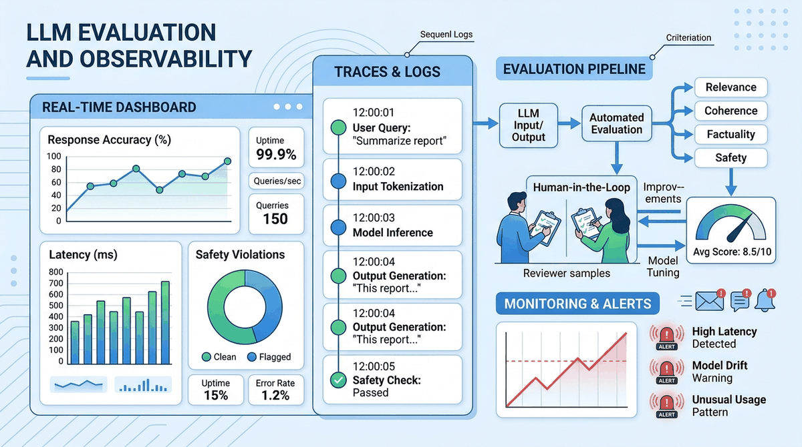

"Without data, you're just another person with an opinion. Without evaluation, you're just another model with a prediction."
Eval, Chronically Skeptical AI Agent

You have built something (Parts III-VII). How do you know if it works? This chapter is the eval chapter: classical metrics, LLM-as-judge, eval-driven quality gates, observability, OpenTelemetry, long-context benchmarks, and the experimental rigor that separates "ships features" from "ships working features." Eval is the most under-invested part of every team's LLM stack; this chapter is the corrective.
Chapter Overview
Building LLM applications is only half the challenge; knowing whether they actually work is the other half. Unlike traditional software where correctness is binary, LLM outputs are probabilistic, subjective, and context-dependent. A model that performs brilliantly on one prompt may fail catastrophically on a slight rephrasing. This fundamental uncertainty makes rigorous evaluation, principled experiment design, and continuous observability essential for every LLM project.
This chapter covers the complete evaluation and monitoring lifecycle. It begins with core evaluation metrics (perplexity, BLEU, ROUGE, BERTScore, LLM-as-Judge) and standard benchmarks (MMLU, HumanEval, MT-Bench, Chatbot Arena). It then addresses experimental design with statistical rigor, including bootstrap confidence intervals, paired tests, and ablation studies. Specialized evaluation for RAG and agent systems follows, covering RAGAS metrics, trajectory evaluation, and frameworks like DeepEval and Phoenix.
The chapter also covers testing strategies for LLM applications (unit tests, red teaming, prompt injection testing, CI/CD integration), evaluation-driven quality gates, and arena-style evaluation with Elo ratings. Advanced topics include LLM-as-Judge reliability and debiasing, long-context benchmarks (Needle-in-a-Haystack, RULER, LongBench), human feedback tooling, research methodology for LLM papers, and inference performance benchmarking across hardware platforms. Observability, monitoring, and reproducibility practices are covered in the companion sections later in this chapter.
You cannot improve what you cannot measure. This chapter covers LLM evaluation methods including automated metrics, human evaluation, and LLM-as-judge approaches. The evaluation frameworks here apply to every system built in this book, from simple API calls to complex multi-agent pipelines.
- Select and compute appropriate evaluation metrics for different LLM tasks (generation, retrieval, reasoning, code)
- Design statistically rigorous experiments with bootstrap confidence intervals, paired tests, and proper ablation controls
- Evaluate RAG pipelines using RAGAS metrics and agent systems using trajectory-based evaluation
- Build automated test suites for LLM applications including unit tests, integration tests, and red-team adversarial tests
- Instrument LLM applications with distributed tracing using LangSmith, Langfuse, or Phoenix
- Detect and respond to prompt drift, model version drift, and embedding drift in production systems
- Implement reproducibility practices including prompt versioning, config management, and experiment tracking
- Integrate evaluation into CI/CD pipelines using assertion-based testing and promptfoo
- Design quality monitoring dashboards with alerting for production LLM applications
- Use arena-style evaluation with Elo ratings and pairwise comparison for model ranking
- Navigate evaluation harness ecosystems including lm-eval-harness, HELM, and BigBench for systematic model comparison
- Identify and mitigate LLM-as-Judge biases (position bias, verbosity bias, self-enhancement) for reliable automated evaluation
- Evaluate long-context models using Needle-in-a-Haystack, RULER, and LongBench benchmarks
- Benchmark LLM inference performance (TTFT, TPOT, throughput) across GPU, TPU, and alternative hardware
- Chapter 13: LLM APIs (chat completions, message formatting, model parameters)
- Chapter 14: Prompt Engineering (prompt design, structured outputs, chain-of-thought)
- Chapter 23: Retrieval-Augmented Generation (embedding search, vector stores, RAG pipelines)
- Chapter 26: AI Agents (agent architectures, tool use, planning patterns)
- Familiarity with Python testing frameworks (pytest) and basic statistics
Sections
- 44.1 LLM Evaluation Fundamentals A comprehensive chapter from the Building Conversational AI textbook.
- 44.2 Experimental Design & Statistical Rigor A comprehensive chapter from the Building Conversational AI textbook.
- 44.3 Testing LLM Applications A comprehensive chapter from the Building Conversational AI textbook.
- 44.4 LLM-Specific Monitoring & Drift Detection A comprehensive chapter from the Building Conversational AI textbook.
- 44.5 Evaluation-Driven Quality Gates Using evaluation metrics as automated deployment gates, regression testing, and continuous quality assurance for LLM applications.
- 44.6 Observability & Tracing A comprehensive chapter from the Building Conversational AI textbook.
- 44.7 LLM Experiment Reproducibility A comprehensive chapter from the Building Conversational AI textbook.
- 44.8 LLM-as-Judge: Reliability, Debiasing, and Training Judge Models A comprehensive chapter from the Building Conversational AI textbook.
- 44.9 Long-Context Benchmarks and Context Extension Methods A comprehensive chapter from the Building Conversational AI textbook.
- 44.10 OpenTelemetry for LLM Applications A comprehensive chapter from the Building Conversational AI textbook.
- 44.11 Research Methodology for LLM Papers A comprehensive chapter from the Building Conversational AI textbook.
What's Next?
In the next chapter, Chapter 55: LLM Evaluation & Quality Metrics: Observability and Monitoring, we cover the logging, tracing, drift detection, and alerting patterns that keep LLM systems healthy in production.